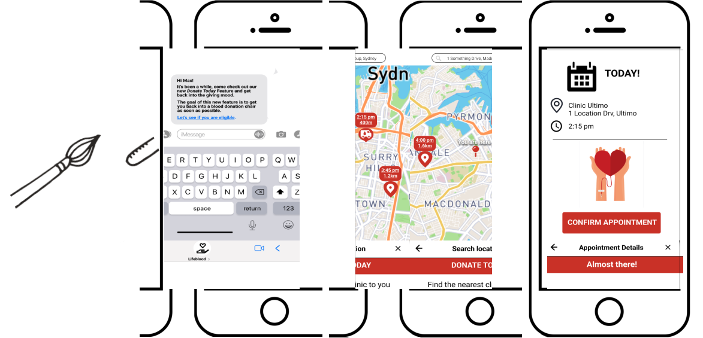

1 min summary
Problem: Lifeblood needs a way to understand and solve their digital experience because they want to encourage donors who already have been to donate to continue coming back and not cancelling.
Process: We researched and analysed the deep reason why people where not attending to their appointments and how to improve users’ experience within their digital solution, to encourage donours to book more often.
Solution: The goal of these improvements was to reduce the cognitive load of the user, increase their engagement and fast-forward them into a donation chair as soon as possible.
Duration: 2 weeks
Team: Millie, Enza, Hang and Chris
Client: Australia Red Cross
Methods: Market research, Comparative Analysis, User Interview, Affinity Mapping, Personas, Journey Map, Crazy 8s, Design Studio, MVP, Sketching, Wireframing and Prototyping
Tools: Trello, Google Forms, Otter.ia, Miro and Figma
1) The Brief:
Australian Red Cross Lifeblood was facing high
rates of cancelled appointments, thousands of donors were cancelling
their donations every week and 43% of first time donors were not
coming back.
'How might we ensure that convenience is at the forefront in the scheduling process?'